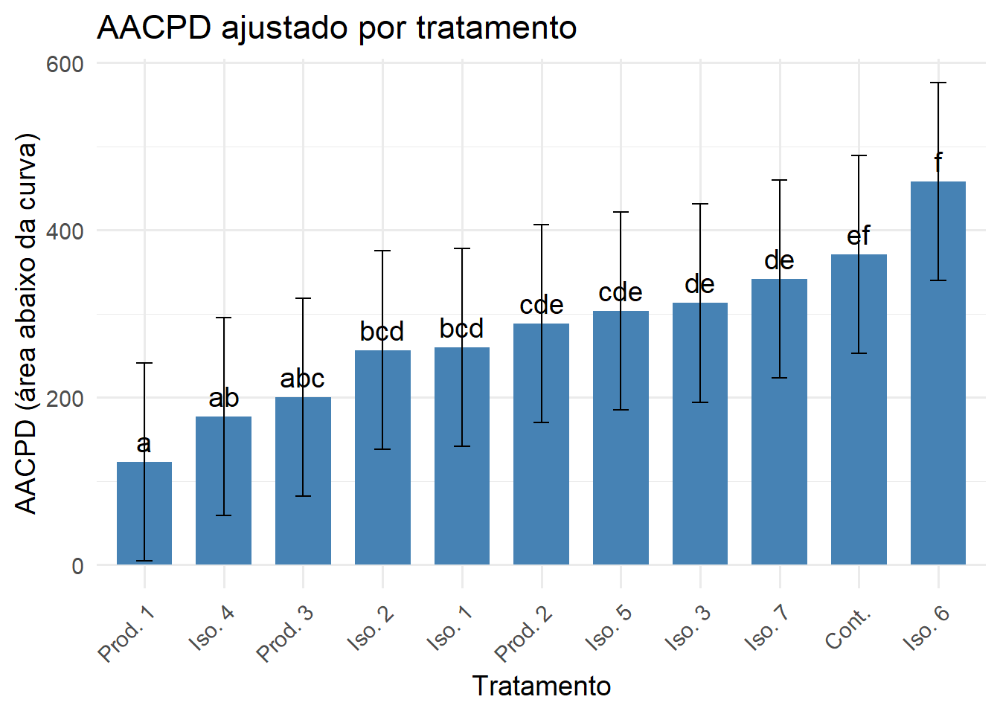

# 5. Ranqueamento dos tratamentosranking <- multcomp::cld(medias, Letters = letters) # gera grupos de letrasprint(ranking)
Tratamento emmean SE df lower.CL upper.CL .group
Produto 1 123 33.9 11.6 48.8 197 a
Isolado 4 177 33.9 11.6 103.0 251 ab
Produto 3 200 33.9 11.6 125.7 274 abc
Isolado 2 257 33.9 11.6 182.4 331 bcd
Isolado 1 260 33.9 11.6 185.5 334 bcd
Produto 2 288 33.9 11.6 214.3 363 cde
Isolado 5 303 33.9 11.6 229.1 377 cde
Isolado 3 313 33.9 11.6 238.6 387 de
Isolado 7 342 33.9 11.6 267.6 416 de
CONTROLE 371 33.9 11.6 296.7 445 ef
Isolado 6 458 33.9 11.6 383.7 532 f
Degrees-of-freedom method: kenward-roger
Confidence level used: 0.95
P value adjustment: tukey method for comparing a family of 11 estimates
significance level used: alpha = 0.05
NOTE: If two or more means share the same grouping symbol,
then we cannot show them to be different.
But we also did not show them to be the same.
Gráfico comparando os tratamentos
library(emmeans)library(multcomp)library(ggplot2)library(dplyr)library(stringr)# 1. Obter médias ajustadas do modelomedias <-emmeans(modelo_completo, ~ Tratamento)# 2. Comparações com Tukey + letras de significâncialetras <-cld(medias, Letters = letters, adjust ="tukey")# 3. Remover espaços das letrasletras$.group <-gsub(" ", "", letras$.group)# 4. Renomear tratamentos corretamenteletras$Tratamento <- letras$Tratamento %>%str_replace("(?i)isola[dt]o\\s*", "Iso. ") %>%str_replace("(?i)produto\\s*", "Prod. ") %>%str_replace("(?i)controle", "Cont.")# 5. Ordenar por AACPD (emmean) e fixar ordem como fatorletras <- letras %>%arrange(emmean) %>%mutate(Tratamento =factor(Tratamento, levels = Tratamento))# 6. Plot com nomes e ordem corrigidosggplot(letras, aes(x = Tratamento, y = emmean)) +geom_col(fill ="#4682B4", width =0.7) +geom_errorbar(aes(ymin = lower.CL, ymax = upper.CL), width =0.2) +geom_text(aes(label = .group), vjust =-0.5, size =5) +labs(title ="AACPD ajustado por tratamento",y ="AACPD (área abaixo da curva)",x ="Tratamento" ) +theme_minimal(base_size =14) +theme(axis.text.x =element_text(angle =45, hjust =1))

Modelo Generalziado - TESTE DE AJUSTE VIA K-S
library(MASS) # Para fitdistrlibrary(stats)# Vetor de respostax <- aacpd_result$AACPD# 1. Normalks.test(x, "pnorm", mean =mean(x), sd =sd(x))
Asymptotic one-sample Kolmogorov-Smirnov test
data: x
D = 0.12414, p-value = 2.924e-09
alternative hypothesis: two-sided
Asymptotic one-sample Kolmogorov-Smirnov test
data: x
D = 0.050365, p-value = 0.07028
alternative hypothesis: two-sided
# 4. Beta — somente se seus dados estiverem entre 0 e 1# Primeiro normaliza se necessáriox_beta <- (x -min(x) +0.001) / (max(x) -min(x) +0.002) # para garantir que caia entre (0,1)beta_fit <-fitdistr(x_beta, dbeta, start =list(shape1 =1, shape2 =1))ks.test(x_beta, "pbeta", shape1 = beta_fit$estimate["shape1"], shape2 = beta_fit$estimate["shape2"])
Asymptotic one-sample Kolmogorov-Smirnov test
data: x_beta
D = 0.087589, p-value = 7.998e-05
alternative hypothesis: two-sided
Modelo Generalziado
# Pacoteslibrary(DHARMa)library(readxl)library(pracma)library(emmeans)library(multcompView)library(multcomp)library(stringr)# 1. Carregar os dadosdados <-read_excel("Trabalho final Emerson.xlsx", sheet ="Planilha1")# 2. Calcular AACPD por unidade experimentalaacpd_result <- dados %>%arrange(Planta, Trifolio, Foliolo, Avaliador, Tratamento, Dia) %>%group_by(Planta, Trifolio, Foliolo, Avaliador, Tratamento) %>%summarise(AACPD =trapz(Dia, Severidade),.groups ="drop" )# 3. Ajustar valores zero (GLMM Gamma não aceita zeros)aacpd_result <- aacpd_result %>%mutate(AACPD_adj = AACPD +0.01)# 4. Modelo misto com distribuição Gammamodelo_glmm <-glmer( AACPD_adj ~ Tratamento + (1| Planta/Trifolio/Foliolo/Avaliador),data = aacpd_result,family =Gamma(link ="log"))# 5. Diagnósticosummary(modelo_glmm)